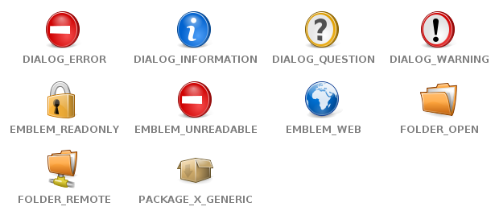
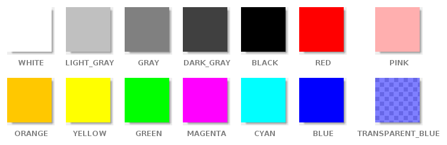

se.bluebrim.maven.plugin.screenshot.example.IconConstants
se.bluebrim.maven.plugin.screenshot.example.ColorConstants
se.bluebrim.maven.plugin.screenshot.example.FontFactory
se.bluebrim.maven.plugin.screenshot.example.HelloWorldPanel